Ce qui est vrai aujourd’hui
Hauteur, pente, dirty spatial, opérations Raise/Lower sur d’autres preuves. Pas de Case B. Pas de peinture écologique. Pas de retenue simulée.
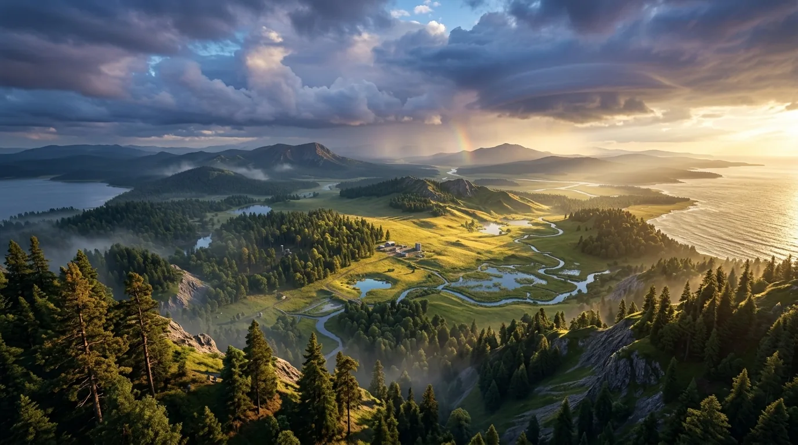
GardenFervor est un RTS de gestion et de transformation écologique. Vous ne construisez pas le monde à la main : vous fixez une intention, puis des unités autonomes exécutent la chaîne sur un territoire réel.
01 — Identité
Vous n’êtes pas là pour peindre des forêts en un clic, ni pour poser chaque route. Vous observez un territoire — relief, eau, sol, pente, accès — et vous déclarez ce que vous voulez obtenir.
Le joueur décide, implante une intention, priorise et intervient seulement lorsque l’autonomie ne suffit pas. Les unités spécialisées portent le travail. Les ressources sont physiques et localisées.
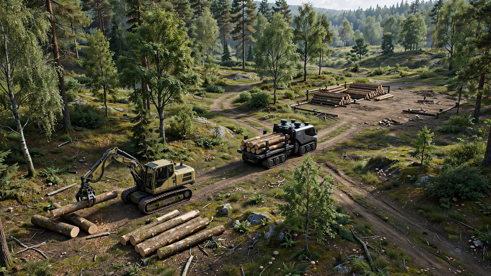
02 — Preuve actuelle
La démonstration investisseur s’appuie sur les vrais systèmes GardenFervor, dans la scène L_InvestorDemo_S3. Le site est déjà prêt : cette preuve ne démontre pas la terraformation.
Prototype jouable — capture réelle. Placeholders BasicShapes de la scène dédiée, pas le rendu final ni une session cinématique.
Déclenchement : bouton LANCER LA DÉMONSTRATION, F8 ou gf.InvestorDemo.RunS3. Autorité : Project, Task, agents et économie physique. Aucun miroir, aucun second jeu.
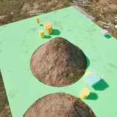
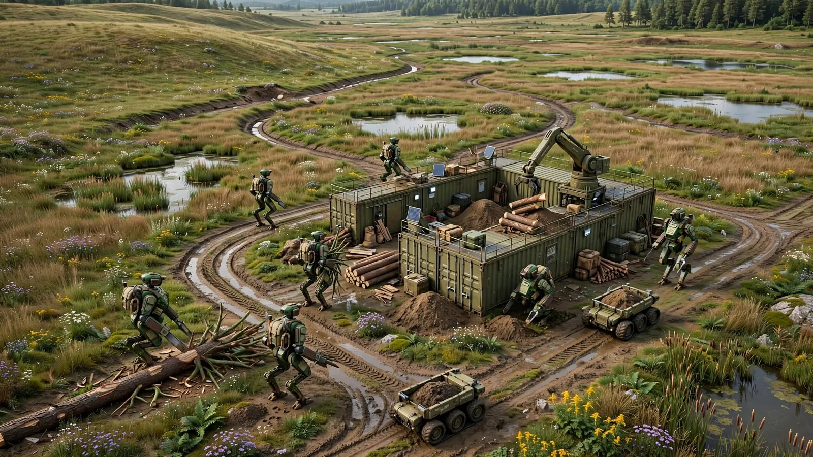
03 — Unités
Pas d’ouvrier générique. La preuve S3 montre trois rôles : exploitation, transport, construction. Ils coopèrent au niveau de l’opération, chacun avec sa propre tâche active.
Le joueur ne pilote pas chaque déplacement. Il voit l’activité, le chantier associé et les blocages compréhensibles. Les familles plus riches restent une cible de conception, pas l’état du prototype.
04 — Ressources
Le bois extrait n’apparaît pas dans un compteur global. U1 produit vers le Stock A. U2 doit transporter vers le Stock B. U3 n’établit l’En service que lorsque le Timber est réellement disponible au stock de destination.
La distance est une contrainte. Les stocks sont localisés. Cette chaîne physique est déjà démontrée sur S3 Cas A.
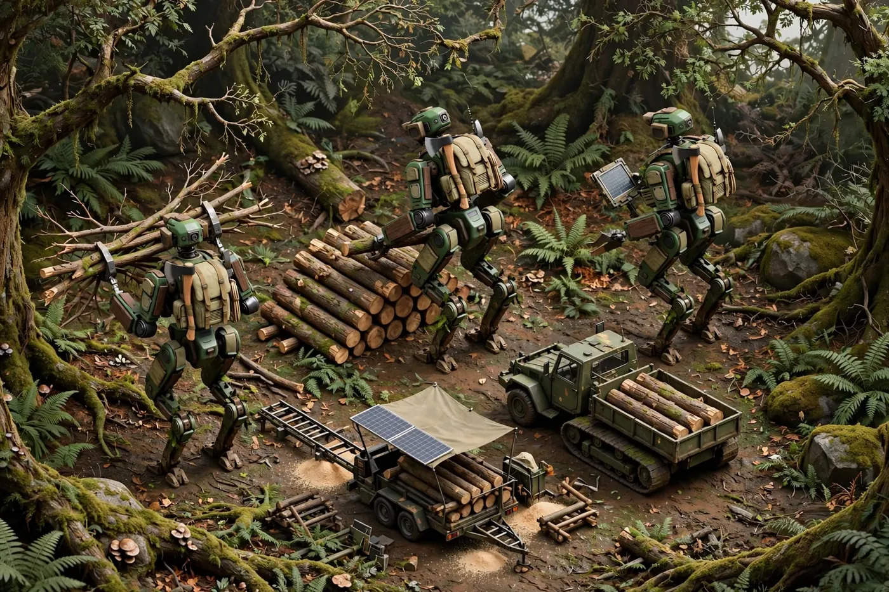
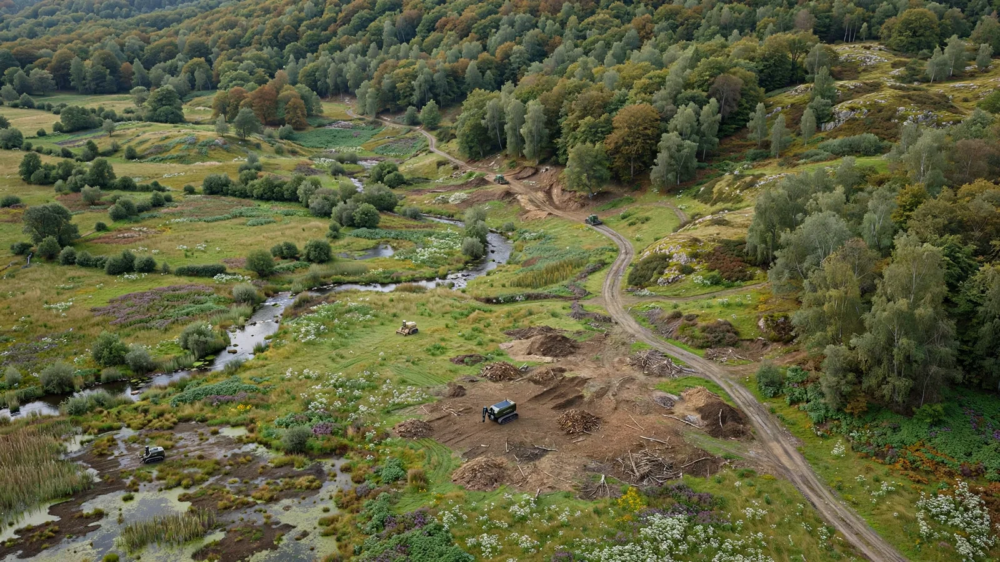
05 — Territoire
Le relief est une vérité de gameplay (C-01, opérations F8). S3 Cas A utilise un chantier déjà prêt. Les images ci-dessous montrent l’ambition des travaux et des ouvrages, pas une preuve runtime actuelle.
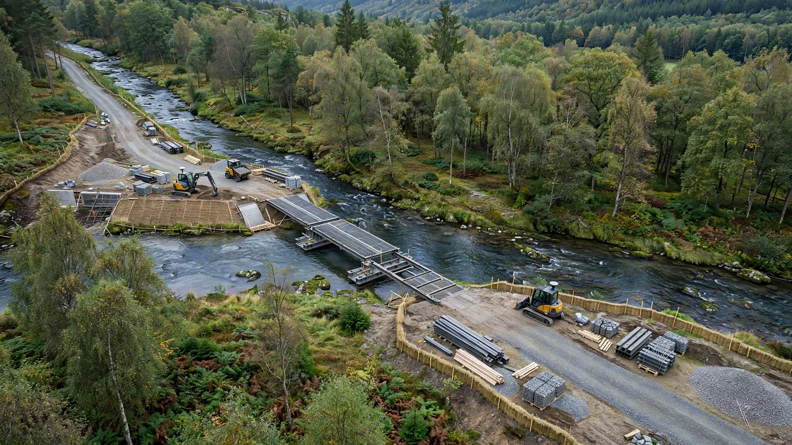
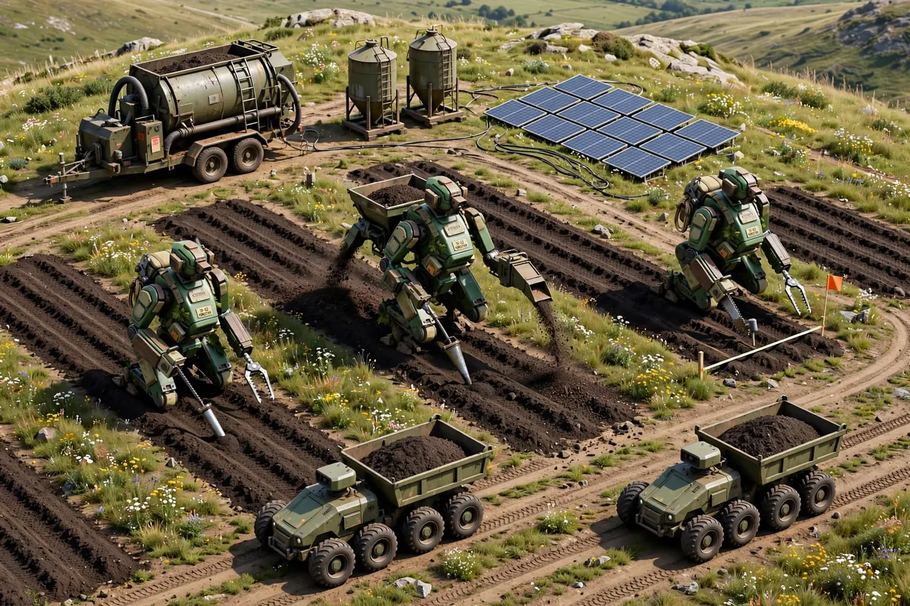
Hauteur, pente, dirty spatial, opérations Raise/Lower sur d’autres preuves. Pas de Case B. Pas de peinture écologique. Pas de retenue simulée.
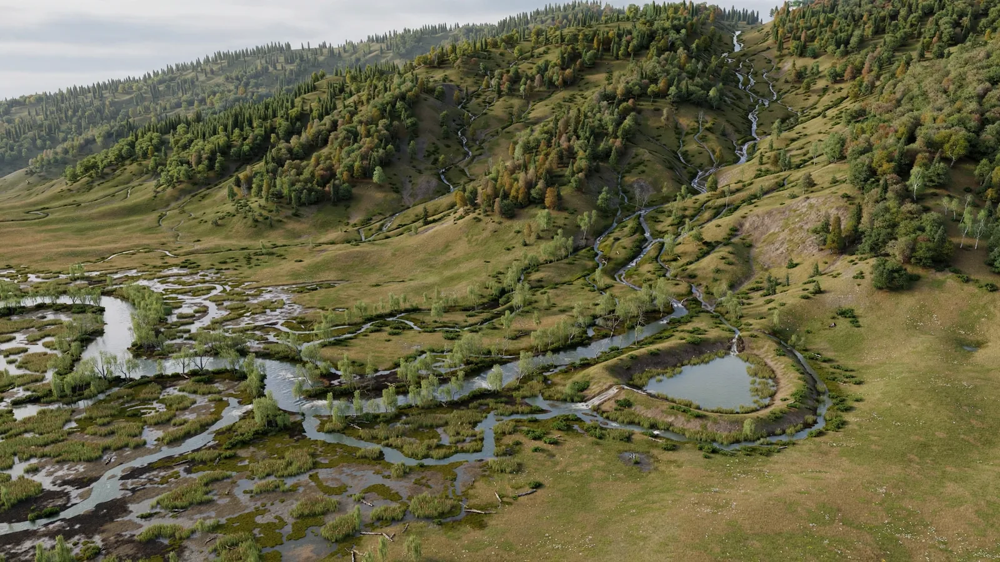
06 — Eau, sols, vivant
L’eau, le sol et les écosystèmes sont conçus comme des vérités de gameplay distinctes du rendu M4/UDW. Leur conception est contractualisée et VALIDÉE (C-15 · C-16 · C-17) ; les simulations ne sont pas implémentées.
Cible : une hydrologie cohérente avec le relief, un sol qui évolue, des états prairie / forêt / zone humide. Ces images ne doivent pas être lues comme un système déjà fonctionnel.
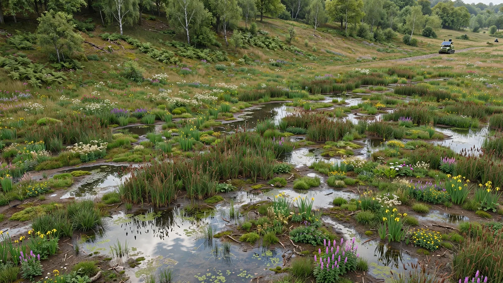
07 — Ambition
Lire le territoire. Définir des intentions, pas des placements. Créer la capacité, puis laisser les chaînes s’organiser. La fidélité visuelle et les simulations plus profondes viendront par étapes, sans mentir sur l’état présent.
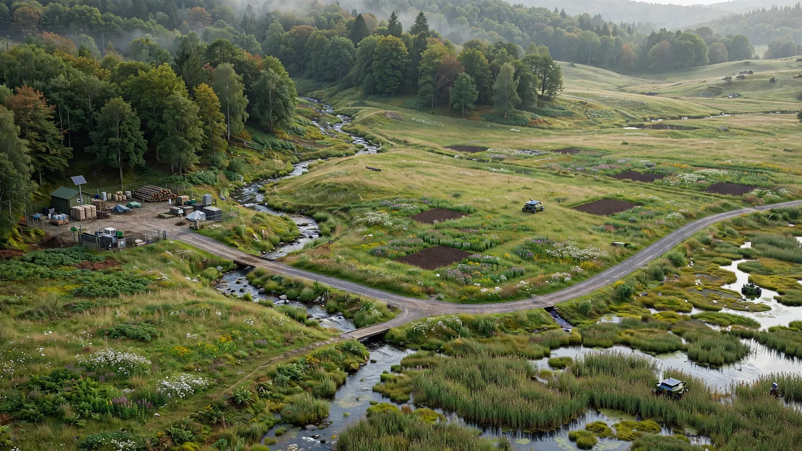
Boucle S3 Cas A démontrée. 16/16 contrats VALIDÉS en conception. Placeholders de présentation.
Assets de démo, preuve ODC-F9 des infrastructures (non démarrée), puis simulations eau / sol / écosystèmes (C-15 · C-16 · C-17 déjà VALIDÉS en conception).
Bassins versants, corridors, restauration, plusieurs chantiers en parallèle — si la conception le décide.